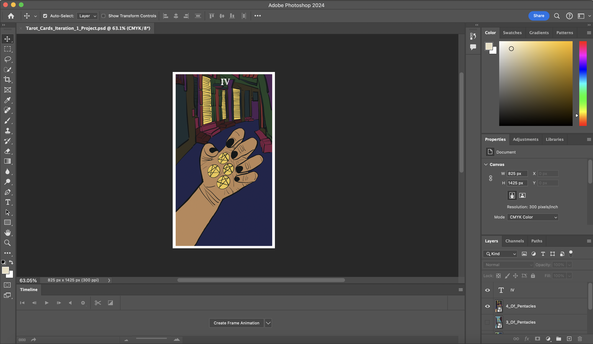
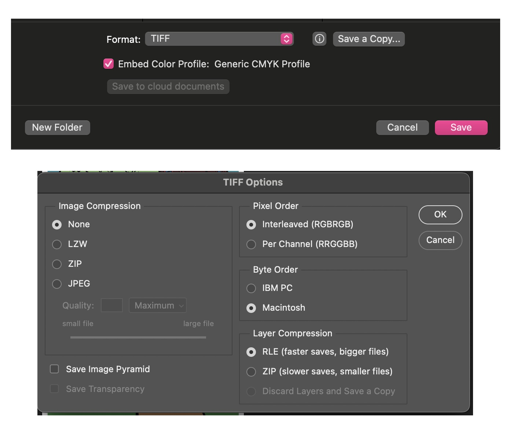

Thesis Weekly Update #2
February 5, 2024: Preliminary prototype
Progress Notes
This week, I completed generating ideas for all 78 cards of the tarot deck on FigJam. I proceeded to continue drawing and coloring on Procreate, which has been a longer process than I initially assumed. I had high hopes to have more cards printed for Monday’s preliminary prototype, but I decided to print some cards from the Pentacles suit to represent what my deck would generally look like.

For the diary study, I plan to print the cards at a local printing shop. A higher fidelity version would be printed at a professional card printing company, which would offer better paper quality for handling and shuffling, as well as rounded corners. I think this should be more realistic for my timeline, and it’ll allow me to frame the diary study to assess the actual learning of the cards’ content.
I received an update from the IRB. The only comment I received was that the IRB couldn’t give retroactive approval of the research methods I conducted last semester, even though I reported that data as secondary analysis as per the department’s recommendation. I’m currently working with Professor Ansari to take the next steps. While I can’t start the diary study until I have official IRB approval, I think it’ll be fine considering how much more time I’ll actually need to properly and mindfully design each tarot card.
Design Choices
I began designing cards 1-10 for each Minor Arcana suit for two main reasons: 1) my idea of drawing the cards from the reader’s perspective felt the most relevant here, and 2) the Minor Arcana cards tend to be harder to read than the Major Arcana.
I found myself including hands for most of the cards. My intention in doing so is to make the reader feel as though they’re playing an active role in the card, especially in regards to how their interpretation will influence their literal actions. Additionally, something I noted from my prior interviews is that hand gestures play a key role in the physical act of reading tarot. These are some of the reasons why I think hands are so important in representation and meaning-making.
A daunting challenge for me is drawing each of the cards. Not only is it 78 in total, but I’m not a super talented artist. I used to draw a lot as a kid and most of my drawing skills today is put towards sketching storyboards for films and video projects. I’ve been treating my tarot card art as a storyboard of sorts to make the experience more familiar and approachable.
The art here is very much inspired by the Rider-Waite deck. The Rider-Waite is already super successful and many people start with that deck, because the symbolism tends to be more straightforward. However, it does rely on biblical and medieval symbolism, which isn’t always intuitive to the 21st century reader, especially if they’re just entering the realm of tarot for the very first time. Drawing on my own interests, I’ve blended elements of fantasy and reality (specifically urban imagery for the latter - born and raised in NYC!). My hope is for the symbolism of these cards to be more intuitive to a novice reader today, which I plan to assess with my diary study. Of course, there are some biases and limitations to my own approach. For example, the cards might resonate more with people who grew up in urban spaces and/or are drawn to fantasy. It’s been tough finding that balance between generalizability and specificity.
As for the color palette, I somewhat went in without a concrete one. I had a few colors in mind, such as the golden-yellow for the pentacles and cups, as well as the warmer shades of brown and green. But really, I wanted to see where I’d land in the process of making. I think I’ve arrived at two camps, one with warmer colors that are common in my daytime cards, and one with cooler colors that are common in my nighttime cards. Even within this trend, it’s common for the more “positive” (to be honest, most) cards to take place during the day and the more “negative” cards to take place at night. Though this is just a trend in the Minor Arcana cards, and I imagine this won’t necessarily be true for the Major Arcana cards. For example, The High Priestess and The Moon are both contemplative cards that can honestly swing either way in my head.
I have a lot of work cut out for me, so I’m hoping to keep chugging along in the next 1-2 weeks. I will also begin making a table of my own key terms for the cards, which will inform the website portion of my Thesis. Additionally, I will be developing copy for the booklet description of each card.
Designing with Procreate
- Create a new canvas preset for tarot cards: CMYK color space, 300 dpi, 8.25” by 14.25”. Note that tarot cards are actually 2.75” by 4.75”. I made the Procreate canvas larger for better resolution.
- Draw each card on its own canvas. I used the standard Syrup inking brush to outline the images before coloring each card.
- Export each card canvas as a PNG file for highest quality. These will be imported into Photoshop for further editing.
Resizing Tarot Cards on Photoshop
- Set canvas size to standard tarot card dimensions (2.75” by 4.75”).
- Import Procreate exports of each tarot card design into Photoshop file. Each card gets its own layer.
- Resize each card to be 31.39% of its width and 32.49% of its height. This creates a white border around the actual image of the card.
- Add text to the top center of the card. I used the Rye font from Google Fonts. I switched between black and white font colors for visual contrast. Update the Roman numerals for each card layer.
- Export each layer to get the individual cards for printing.
Printing Instructions (LoFi)
- Create letter sized PSD file (8.5” by 11”).
- Import exports of tarot card designs (comfortably fits 4 per page).
- Each layer contains one tarot card design. Double click on each one and add a 2pt stroke for the cutting guideline.
- Print. I don’t have a color printer at home, so I sent it to Staples with the heavyweight matte paper option.
- Cut each card out following the stroke outline.
The prints came out darker than I expected - I made a mistake! While my Procreate and Photoshop files were in CMYK color space, I didn't export each individual card from Photoshop in CMYK. To do this, I had to save each card as a TIFF file, which would enable the CMYK color space. I also switched the mapping to work for my operating system (Macintosh). I got this info from Peachpit , which was super helpful! I plan to run off these prints to make sure the colors match.
Information I’m Looking for at this Stage
- How easy is it to draw meaning from the cards when looking at it alone? Can you come up with 3 key terms for each card?
- Are the variation of colors too confusing and/or distracting?
- Is it easy or hard to discern the actual image content?
Past Relationship with Feedback
It hasn’t always been easy for me to take feedback. While I think I’m better at handling criticism now, I used to be a huge people-pleaser and would internalize feedback as personal shortcomings. Though my experiences up until now have made it easier for me to separate feedback from identity.
I was a film studies major in undergrad, specializing in screenwriting, which meant that I often received blunt criticism from professors and students alike. My approach is to kind of dissociate from whatever inferior feelings I instinctively have and listen to feedback as though I’m someone else. This helps me process feedback more objectively. I like writing things down and drawing connections where I think feedback from multiple people might be conflicting or related.
I find it easier to process feedback when I’m editing films, videos, and photos. Something about the process of film/photo editing feels more technical to me, even though writing and editing are very creative processes. I think it comes down to the manner in which feedback is typically given. With editing, I think it’s easier to communicate and receive communication about actionable steps to take, as well as the justification as to why those steps should be taken. Whereas with writing, stylistic choices can be very personal, especially when it comes to changing narrative plot. This is my own approach to giving feedback too; I try to pinpoint specific areas that I think could be improved, explain why I think addressing it would help reach the artist’s objective, and offer ideas as to how I would go about revising. In the past, I’ve been told that while my feedback can come off as too prescriptive or blunt. I’ve been trying to be better by framing my feedback with the compliment-criticism-compliment “sandwich.”
Something I still struggle with today is pinpointing what the criticism beneath the criticism is. This is especially true for instances when it feels like everyone is giving me conflicting feedback. The people pleaser in me wants to hit all those suggestions, but that inevitably makes my next draft worse. I want be better at getting to the heart of feedback and gaining the confidence to effectively incorporate feedback that furthers my goals.